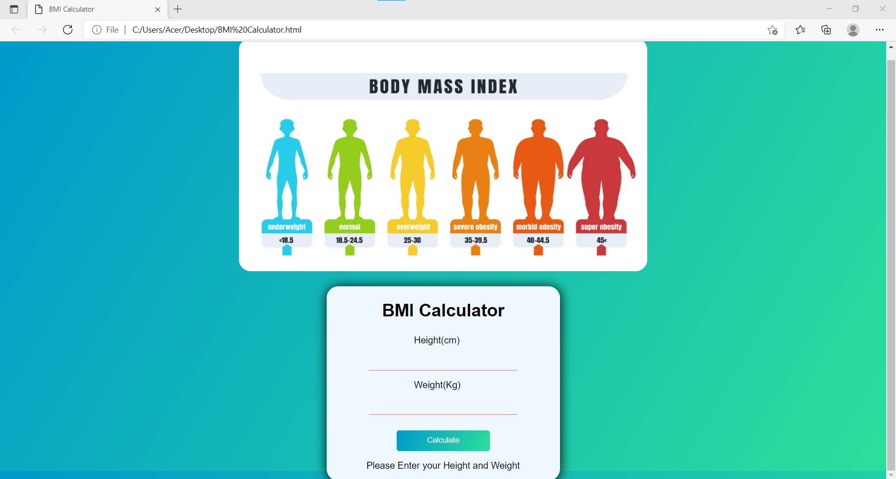

BMI WEB
INSPIRATION
This project was inspired by the idea to create a web application, and I want to know my own BMI to measure body proportions utilizing my web. As a consequence, this work was created.HOW IT STATRED?
It began with a study into the implementation of BMI calculations using JavaScript from the Internet and web page design using HTML and CSS. To measure the user's BMI, the user must first enter their weight and height. Then, if users wish to discover their BMI level, they can refer to the infographic above.WHAT WAS LEARNED AND THE OBSTACLES?
Working on this project taught me how to utilize JavaScript more successfully while also allowing me to practice creating web applications on my own.Technologies:
- -HTML
- -CSS
- -Javascript